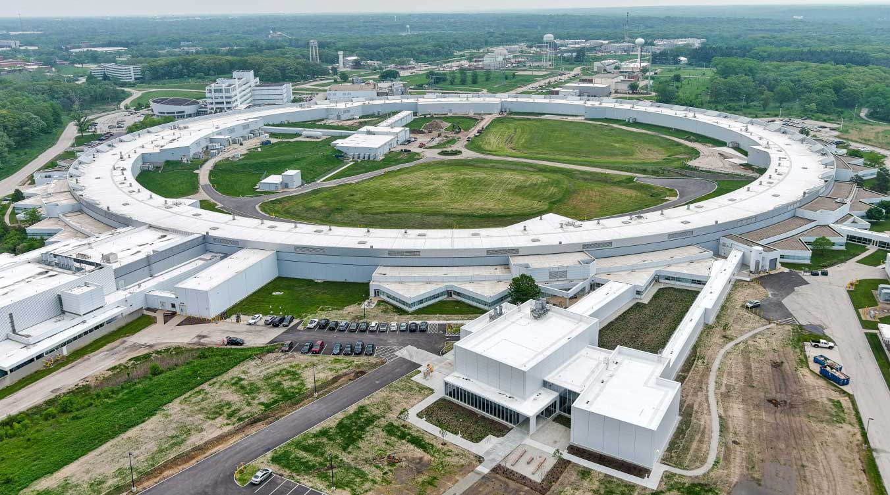
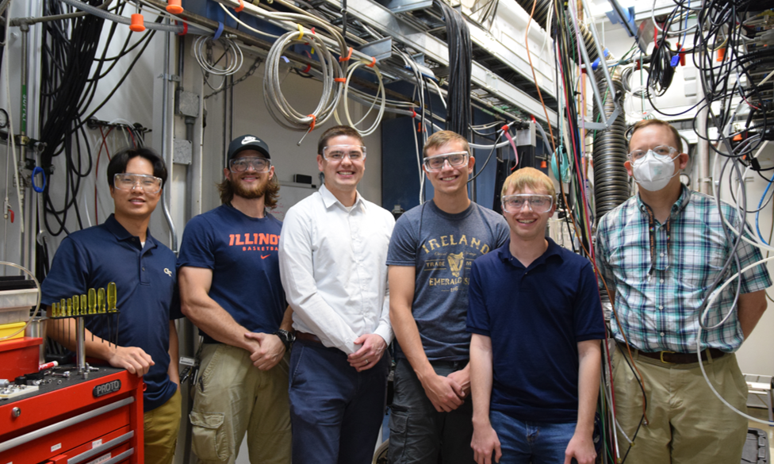
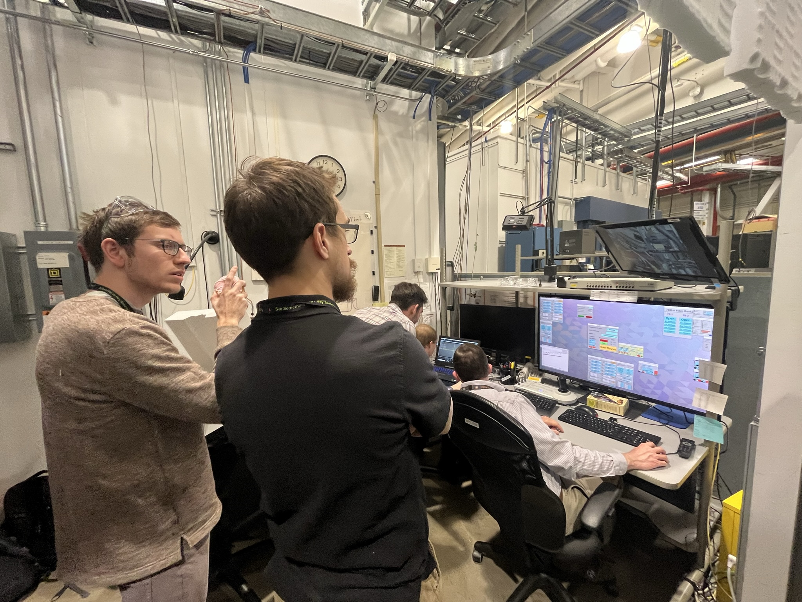
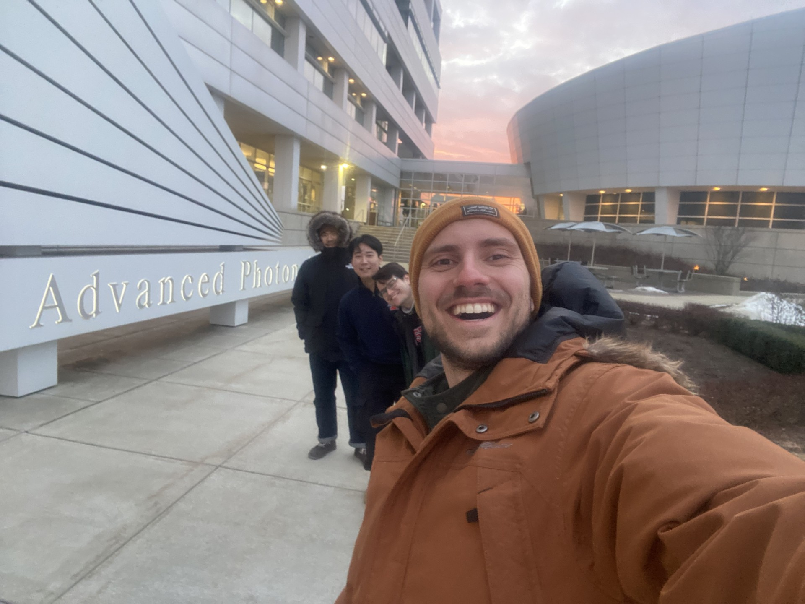
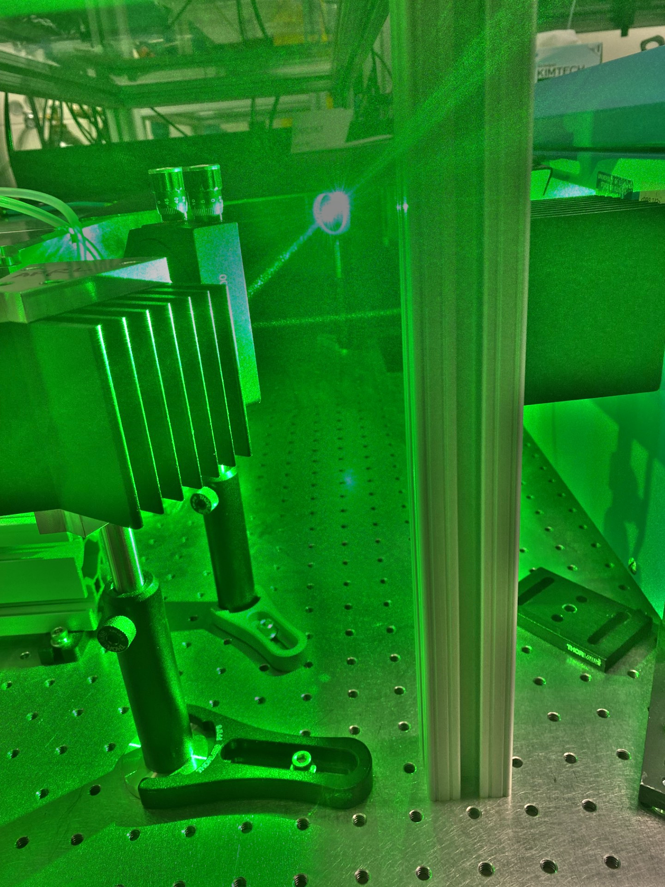
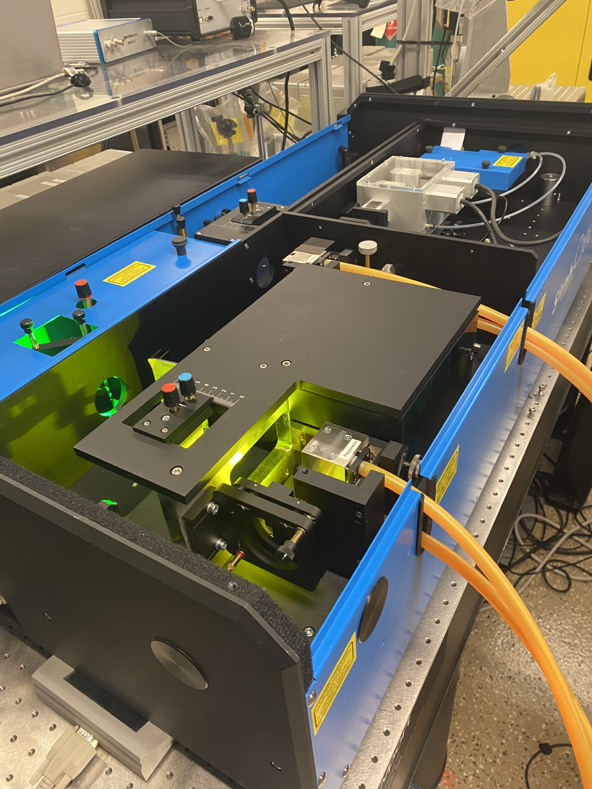
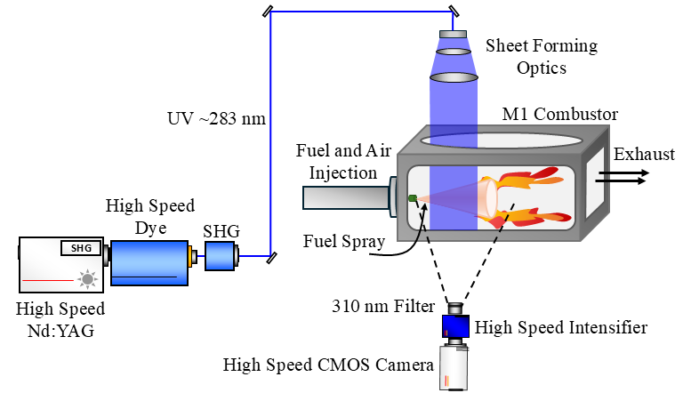
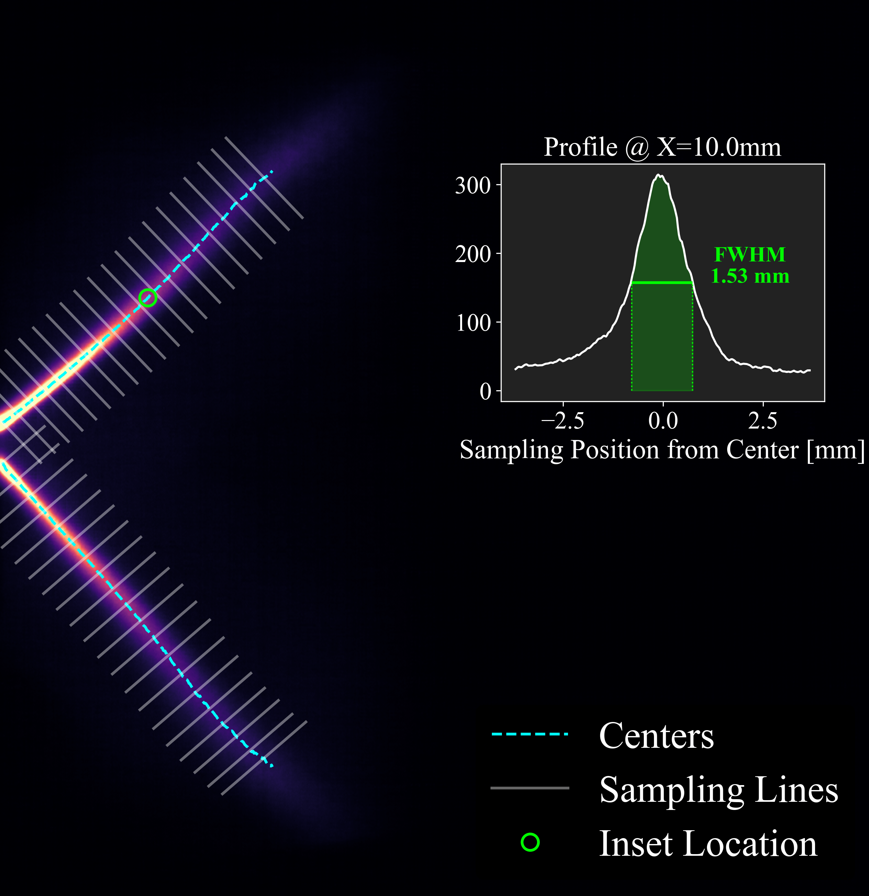

PhD | Mechanical Engineering
Ph.D. in Mechanical Engineering from UIUC specializing in machine learning, computer vision, and statistical inference for turbulent spray combustion. I build computational models and pipelines to extract insights from large, heterogeneous experimental datasets.
A look into my research: capturing fluid behavior, spray ignition, and high-speed combustion dynamics.
Applying advanced quantitative diagnostics to swirl-stabilized combustor to investigate multiphase turbulent combustion.
Executing high-stakes experimental campaigns utilizing synchrotron X-rays to penetrate dense spray regions at high spatial and temporal resolutions.




Deep learning for experimental spray image denoising and flow velocimetry.
Extracting quantitative kinematic data from high-speed imaging. These algorithms isolate droplet and flame kernel trajectories from experimental images during different stages of flame stabilization.
Investigating large-scale fuel distributions in the combustor during flame stabilization.

Pump Nd:YAG laser

Dye laser

Experimental schematic
Fuel planar-laser-induced flourescence experimental video

Quantitative fuel dispersion measurement
Presenting research with international academic and industry audiences.